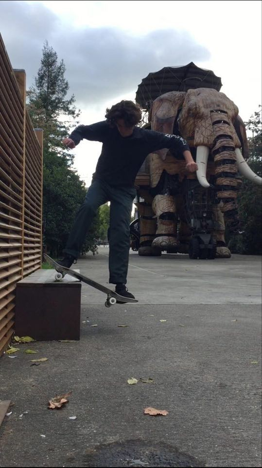

Bonjour, Je m'appelle Henri Lelievre 😎
Étudiant de 3ème année à Audencia Bachelor in Management. Spécialisé dans la vente , je suis actuellement à la recherche d'un stage en tant que commercial B to B
LinkedInMes expériences
Depuis mon entré à Audencia je me suis principalement dirigé vers la vente . Tout d'abord chez Decathlon en stage à Londres. En deuxième année j'ai eu l'opportunité de faire un stage chez Supersec où j'étais chargé de faire une prospection active auprès de détaillants du secteur BIO et Vrac, faire la découverte des besoins et formuler de propositions commerciales pour réussir à conversion des prospects en clients fidèles et enfin je devais gérer le développement des gammes.

Mes compétences 💻
Grâce à mes études à Audencia j'ai acquis les compétences générales liée au monde de l'entreprise
-Droit de affaires
-Comptabilité analytique et financière
-Techniques de ventes
- Marketing Mix
- Misions d'entreprises
Tous les enseignements que j'ai acquis à l'école m'ont donné l'opportunité de me professionnaliser
Mes passions
🥇Passioné de sport depuis mon plus jeune âge. J'ai pratiqué de nombreux actvités sportive mais celles dans les quelles je me suis le plus dépassé sont le tennis et le skateboard.
